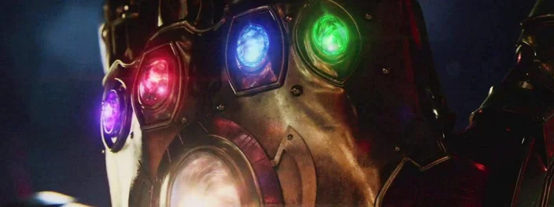
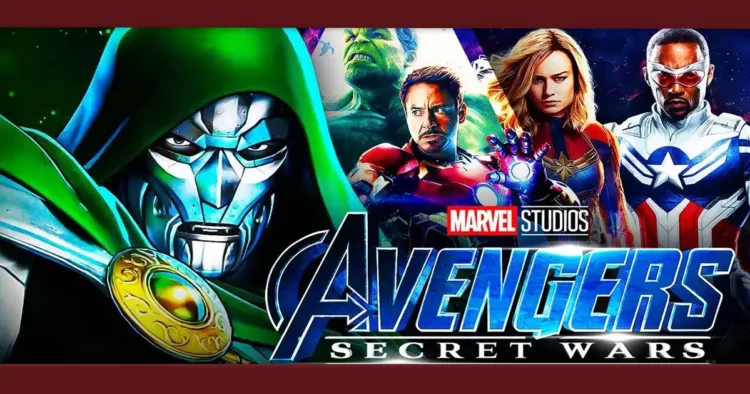
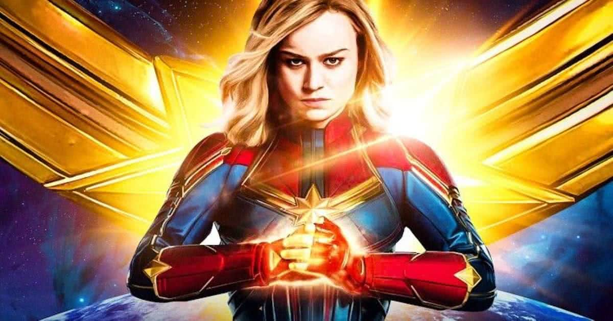

Marvel: Joias do Infinito não eram parte inicial do MCU, diz James Gunn

O MCU se tornou mundialmente conhecido pelas conexões entre os seus filmes e o planejamento da Marvel para os anos seguintes, mas nem todos os detalhes foram pensados desde o início.
Isso, pois o diretor de Guardiões da Galáxia, James Gunn, revelou em uma resposta a um fã no Twitter que a utilização das Joias do Infinito no MCU não estava planejada desde o início como pode parecer.
Confira a seguir a declaração completa do diretor e mais detalhes sobre a utilização das Joias do Infinito na trama da Marvel!
Ver notícia completa
Vingadores: Guerras Secretas: Doutor Destino é o vilão em pôster incrível

No último mês de julho, na San Diego Comic-Con, a Marvel Studios surpreendeu ao anunciar os dois próximos filmes dos Vingadores. Sim, de uma vez só o estúido anunciou o 5º e o 6º filme da equipe.
E eles irão estrear no mesmo ano: em maio de 2025 estreia Vingadores: Dinastia Kang, e seis meses depois, em novembro, chega aos cinemas Vingadores: Guerras Secretas, o fim da Saga do Multiverso.
Ver notícia completa
Qual a origem dos poderes da Capitã Marvel?

A personagem Capitã Marvel, que está prestes a retornar com o filme The Marvels, é uma das heroínas mais poderosas do Universo Cinematográfico da Marvel.
Nos filmes, ela já mostrou que é capaz de voar, é mais forte e resistente que a maioria dos heróis, viaja pelo espaço sem precisar estar protegida dentro de uma nave e ainda possui supervelocidade. A personagem ainda é capaz de absorver e manipular energia como ela quer.
Por isso, muitos fãs se fazem a mesma pergunta: de onde surgiram todos esses poderes de Carol Danvers?
Ver notícia completa